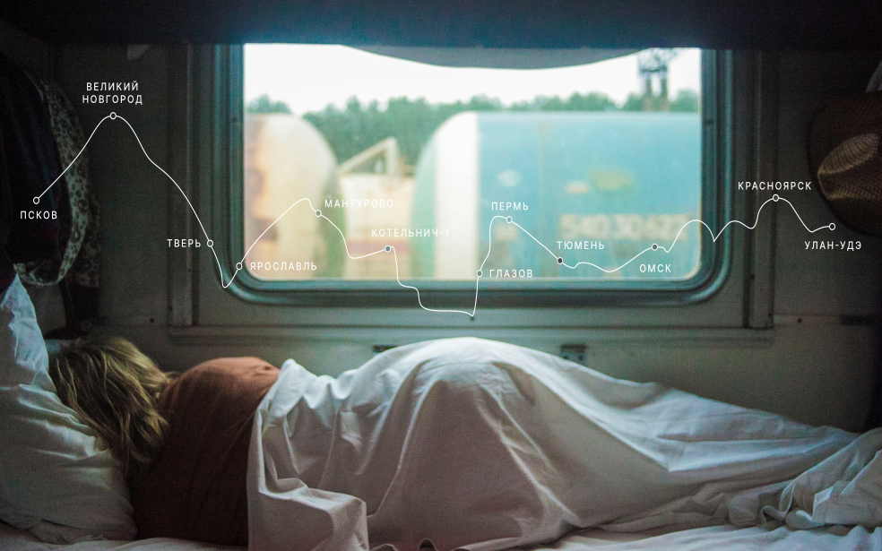

Путешествия по России
Настоящая страна не в выпусках новостей, а здесь.

ваша полка - верхняя
Чего мы там не видели?
По опросам ВЦИОМ, 95% россиян мечтают куда-нибудь поехать,
но
только 36% планируют провести отпуск в родной стране. Мол, чего мы тут, дома, не видели? На самом
деле,
Россия — это целая вселенная с ласковым морем юга, густыми лесами Саян и суровыми льдами плато
Путорана.
А ещё увидеть все эти красоты можно без миллионов на счету, загранпаспорта и многочасовых перелетов.
Как, например, Вера Башмакова — смелая молодая мама, которая взяла в охапку троих детей, усадила их
в
свою «Ладу» и проехала 20 тысяч километров по родной стране. Мы выбрали и описали некоторые
интересные
места, достойные вашего отпуска.
- Часовых поясов 11
- Объектов природного наследия ЮНЕСКО 12
- Объектов культурного наследия ЮНЕСКО 16
- Природных заповедников 105
- Аэропортов 241
Куршская коса

Здесь, посреди лесов и песчаных дюн, вы сможете увидеть два водных
горизонта —
спокойного Куршского залива с одной стороны и подёрнутого рябью волн Балтийского моря с
другой.
Уникальная природная зона на краю российского анклава.
На этом Калининградская область не заканчивается. Для
путешественника и
исследователя там же по соседству — самая западная точка России, Балтийская коса, — и
немецкое
наследие россыпи небольших приморских городов. Атмосфера здешних мест исключает суету,
окуная в
спокойствие природы и запах стального, прохладного моря.
Кольский

Почти весь полуостров находится за Полярным кругом. Саамская тундра,
от
которой
на
юг —
тайга, а на север — Ледовитый океан, прикидывающийся Баренцевым морем.
Возможно, вы смотрели Звягинцева и даже слышали историю арктического
фестиваля
в
Териберке. Возможно, слово «Хибины» не осталось под снегом школьных воспоминаний об уроках
географии. Возможно, вы не интересовались пронизывающей земную кору сверхглубокой скважиной,
а
от
апатитов вас давно накрывает апатия. Но ваша мечта увидеть северное сияние начинает
сбываться с
билетом
в Мурманск.
Алтай

Алтай — одно из красивейших мест в России.
В первую очередь из-за гор: если ехать вдоль хребта, вы увидите склоны, усыпанные соснами,
горные
реки и озёра. А если вы откроете в автомобиле окна, сможете познакомиться с невидимым чудом
здешних
мест — горным воздухом.
Климат на Алтае умеренный, поэтому ехать сюда лучше всего летом. Так
вы
увидите
всё
разнообразие местной флоры и фауны. По лесам Алтая бродят лоси, над хребтами летают орлы, а
на
равнинах пасутся косули. И знаменитые манулы — тоже обитатели Алтайского края.
Зимний Байкал

Всем известен Байкал как крупнейшее озеро
в мире. Многие также знают, что это самый большой источник пресной воды и одно из
красивейших
мест в
России.
Конечно, это всё так. Но Байкал ещё идеальное место для соревнований
по
скийорингу.
Это такой вид спорта, когда лыжник привязывает себя
к мотоциклу, и тандем старается развить как можно бóльшую скорость на льду. В марте 2019
года на
фестивале «Байкальская миля» был поставлен мировой рекорд — 197.011 км/ч.
Карелия

Сибирь заканчивается не на Урале, а в Карелии: образующая тайгу
сибирская
лиственница не растёт западнее Водлозера. Зато здесь она вымахивает на 30 метров — леса
карельских
национальных парков из-за непроходимых болот никогда не знали топора. Некоторым соснам уже
больше
чем полтысячелетия. Прикоснитесь к живому существу, видевшему солнце раньше, чем увидал его
Иван
Грозный.
В девственном лесу на сотню километров не встретишь тропы. А на редких тропинках деревья
в паре метров от земли помечены медвежьими когтями. Чтобы все знали, кто тут хозяин.